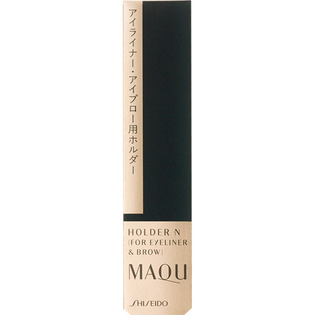
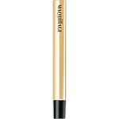

返回列表
产品名称：マキアージュ アイライナー＆ブロー用ホルダーN

資生堂 マキアージュ アイライナー＆ブロー用ホルダーN －
メーカー 資生堂
JANコード 4901872310722
商品の特徴
ホルダーの両端に、カートリッジをセットすることができます。
成分・分量
【分量】
外装サイズ 高さ９９ｍｍ×幅２２ｍｍ×奥行１４ｍｍ
用法及び用量
【使用方法】
・カートリッジを片端のみセットする場合は、ホルダー付属のキャップをつけたままご使用ください。